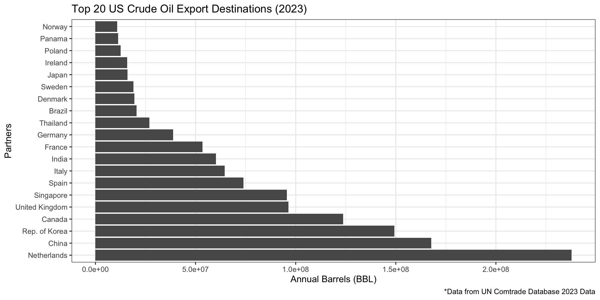
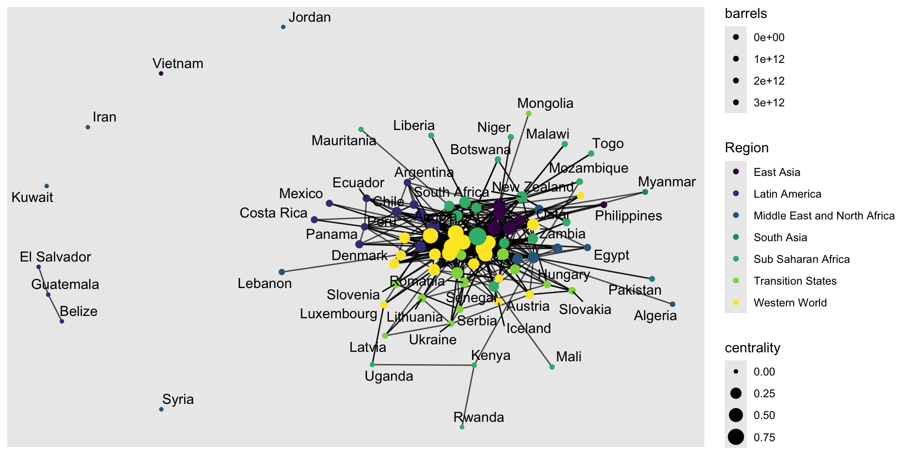

For my final project I am looking at global crude oil trade data from 2023. My data comes from the United Nations Comtrade Data set, which is a comprehensive database for global trade, including hundreds of products, imports and exports, and more. I also am using the Happy Planet Index to introduce some additional variables.
These are the following variables of interest for my project:
Exporter - The country that is exporting the good.
Importer - The country that is importing the good.
quantity_bbl - Quantity in Barrels of oil.
value_usd - The value of oil traded in USD
Region - Region of the world, assigned to each country.
Life Expectancy, Population, Governance Rank, GDP Per capita.
Who does the US export oil to? Does exporting oil prop up an economy well enough to directly relate to a higher quality of life? What do trade networks look like for varying countries across the globe and how can this help explain who is effected most by global events such as conflicts, shortages, etc.?


Not Done yet: Shiny App of network graph, where user can select a country and an additional variable to color points by.